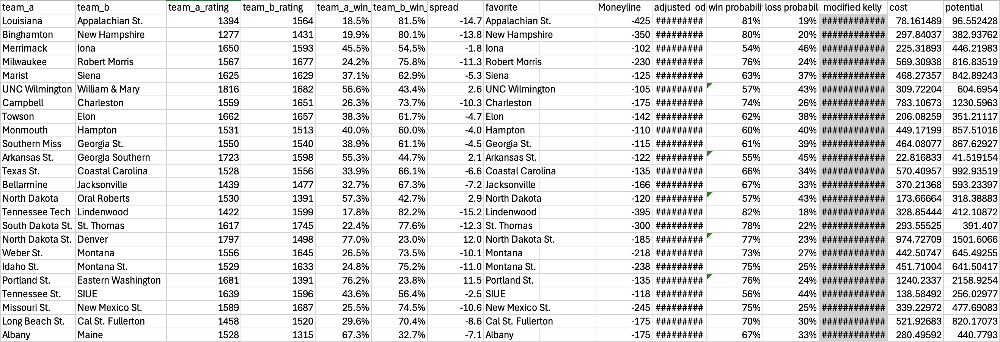

CRAIG: Bayesian Parameter Tuning for Predictive Elo Models
In December 2025, I began adapting my disc golf ratings algorithm for broader applications, ultimately focusing on NCAA Division 1 basketball. By mid January I developed CRAIG (a Collegiate Ratings Algorithm via Intelligent Guessing). The system utilizes Bayesian optimization to fine-tune a ten parameter ranking model which is trained on 2 years of historical data. To maintain accuracy, CRAIG is retrained every few days, ensuring team ratings and parameters reflect current performace trends. In the time since the initial deployment I have streamlined the workflow by automating the bet selection process and refining the underlying predictive logic.
Note on Transparency:While the source code, training data, and specific parameter weights remain proprietary to protect the model's integrity, I will share a simple excerpt of CRAIG's ouput and bet selections and will also note its recent win/loss percentage and weekly ROI below
Above: A sample of CRAIG's moneyline selections for January 22, 2026.
Update (January 26, 2026): I performed rigorous out-of-sample verification on a population of 1016 games sampled over the past month. To test the model under high volume conditions, I focused on the 15 days with the highest game density. During this period, CRAIG maintained a 70.2% hit rate, carving out a consistent edge over the -230 average implied hurdle (which requires a 69.7% win rate to break even).
While the raw signals alone were profitable, the significant gains came from the execution layer. By moving from flat bets to a modified Kelly criterion, I was able to scale into positions where the model showed the highest divergence from market prices. This improved capital efficiency fourfold, turning a baseline 9% return into a 37% net ROI (seen above). To manage tail risk and mitigate idiosyncratic noise, the system enforces a cross-sectional diversification filter, only triggering when it identifies a bucket of at least 10 concurrent opportunities.